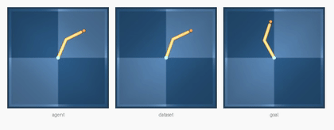
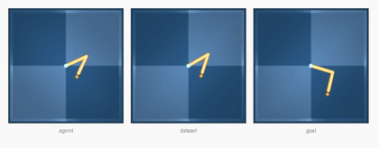
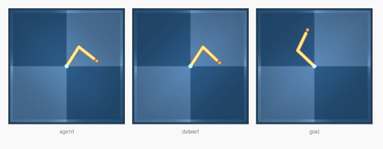
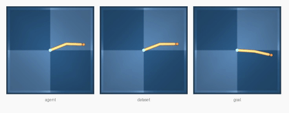

Reproducing the official LeWM Reacher (dm_control) planning benchmark on Apple Silicon — the 4th and final world · June 4, 2026 · companions: PushT · Two-Room · Cube
Bottom line. The last world — and the hardest. Reacher (dm_control / MuJoCo) needed
two fixes beyond rendering, then reproduced at 76.0% (38/50) via the genuine
eval.py protocol on Apple Silicon (MPS). That's below the paper's ~86 and a
reporter's 80 — the biggest gap of the four, for two compounding reasons: the
glfw-vs-egl render-backend shift (shared with Cube) and Reacher being independently hard to reproduce
(a CUDA reporter already saw 80 vs 86, outside the paper's error bars).
Reacher is a 2-link arm that must move its fingertip to a target. Success uses the env's goal criterion, over 50 dataset-sampled start/goal pairs at eval seed 42.
| Run | Env / device | Success | Eval wall-clock | Status |
|---|---|---|---|---|
| Paper (LeWM) | authors, CUDA + egl | ~86 | — | reference |
| Reporter (YushenZuo, #62) | released ckpt, CUDA + egl | 80 outside error bars | — | independent |
| Ours | MPS + glfw + mujoco 3.8.1 | 76.0 (38/50) | 148 s | reproduced (largest gap) |
12 of 50 episodes failed. Reacher is the only world where even an independent CUDA reproducer fell outside the paper's reported error bars, so some of this gap predates the Mac port.
Actual rollouts written by eval.py (lewm_data/reacher/env_*.mp4, re-encoded to GIF).
Each panel triplet shows current observation · replay · goal; the 2-link arm swings its fingertip
toward the goal configuration.




Reacher was the only world that needed two fixes beyond the shared ones — both classic unpinned-dependency mismatches:
| Blocker | Error | Fix |
|---|---|---|
| MuJoCo render backend | ImportError: Unable to load EGL library | MUJOCO_GL=glfw on darwin (shared with Cube) |
| dm_control ↔ mujoco skew | AttributeError: 'MjModel' object has no attribute 'flex_bandwidth' | pip install mujoco==3.8.1 |
mujoco 3.9.0 removed the flex_bandwidth field that dm_control 1.0.41
introspects (it declares only mujoco>=3.8.1, so the breakage slips through). Pinning
mujoco==3.8.1 restores the field; ogbench/Cube only needs >=3.1.6, so it's unaffected.
With both fixes, 50-env parallel rendering works (verified pixels (50,1,224,224,3)).
| Smoke (1 plan, 2 envs) | 3.7 s |
| Batched (50 envs) | ~46–82 s |
| CEM config | 300 × 30, H=5 |
| Total wall-clock | 148 s |
| Render backend | glfw (CGL) |
| Device | Apple MPS |
# env: transformers==4.57.6, hdf5plugin, mujoco==3.8.1 (NOT 3.9.0), patched le-wm/eval.py
# eval.py sets MUJOCO_GL=glfw automatically on macOS
# dataset: reacher.tar.zst (22 GB) -> reacher.h5 (92 GB, 10,000 eps, 2.01M frames)
# from quentinll/lewm-reacher · symlinked at $STABLEWM_HOME/dmc/reacher_random.h5
# checkpoint: quentinll/lewm-reacher weights.pt + config.json
cd le-wm
STABLEWM_HOME=.../lewm_data SWM_DEVICE=mps PYTHONPATH=. \
python eval.py --config-name=reacher policy=reacher/lewm \
solver.device=mps +cache_dir=null eval.num_eval=50
# → {'success_rate': 76.0, ...} in ~148 s
| Artifact | What it is |
|---|---|
reacher-baseline.html | This report |
reacher_report_assets/ep_*.gif | 4 reproduced episodes (3 success + 1 failure) |
lewm_data/reacher/env_0..49.mp4 | All 50 reproduced episode videos |
lewm_data/reacher/dmc_results.txt | Official metrics + evaluation_time |
le-wm/eval_reacher.log | Run log (76%) |
env: mujoco==3.8.1 | The dm_control compatibility fix (down from 3.9.0) |
lewm_data/dmc/reacher_random.h5 | Symlink → 92 GB dataset on external scratch |
lewm_data/checkpoints/reacher/lewm/ | weights.pt+config.json symlinks |
| World | Sim | Paper | Ours (MPS) | Gap | Status |
|---|---|---|---|---|---|
| PushT | pymunk (CPU) | 96.0 ± 2.83 | 90.0 | −6 | reproduced |
| Two-Room | pygame (CPU) | ~87 | 86.0 | −1 | reproduced |
| OGBench-Cube | ogbench / MuJoCo | ~74 | 66.0 | −8 | render gap |
| Reacher | dm_control / MuJoCo | ~86 | 76.0 | −10 | render gap |
Fixes needed to reproduce the released checkpoints from a clean install, all documented upstream:
transformers<5 (#80),
MUJOCO_GL=glfw on macOS (#81),
mujoco==3.8.1 for dm_control, and hdf5plugin.